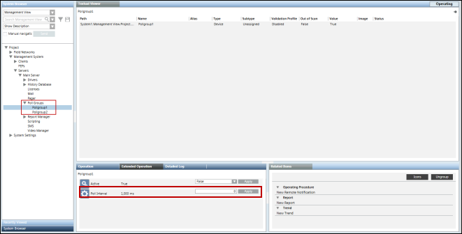
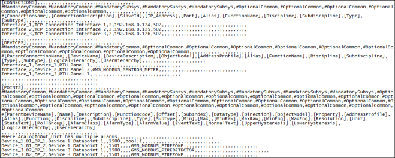
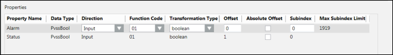
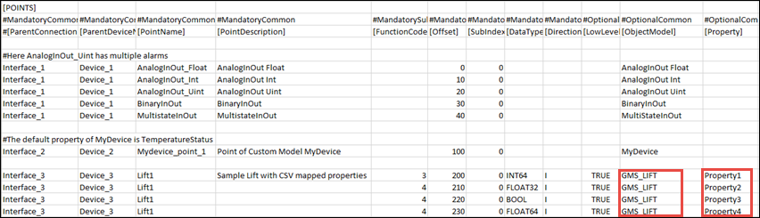

CSV File for Custom Object Model
If the ObjectModel field is specified for a device or data point, the Importer will create a data point based on the specified object model and will configure the addresses according to the custom Import Rules definition. A CSV file can have definitions of both devices and data points referring to a custom object model, as well as devices and data points without any object model specified (which results in instances of the standard object model).
When importing the CSV file that has an object model specified in the ObjectModel field, then the pollgroups assigned to the object model properties in the custom import rules will be imported at the following location, Project > Management System > Servers > Main Server > Poll Groups.
If you need to modify the poll group intervals at any time, you can do so from the Extended Operation tab by specifying the new interval and clicking Apply.
If a data point with input direction does not have a pollgroup assigned or the assigned pollgroup is not present in the custom import rules, then the pollgroup specification is taken from the network node during import of the CSV file.

If the name of the address profile is specified for a particular object model in the CSV file, the address configuration associated with the specified address profile in the Objects and Properties expander will be considered during import.
However, if no name of an address file has been specified, the address profile set as default for the object model in the Objects and Properties expander will be considered during import.
In case of custom points, the value for Low Level Comparison will always be taken from the Custom Import Rules irrespective of whether or not this value is specified in the CSV file.
The following example shows a CSV file which has a combination of such definitions.

In the above example, the Importer will create the following instances:
D1_DP_1 results in an instance of GMS_MODBUS_BINARY_INPUT (an object model in the HQ standard library)
D1_DP_2 results in an instance of GMS_MODBUS_FIREZONE and the property addresses is constructed according to the custom Import Rules (taking 1501 as base address).
Note that Device_1 can contain data points based on a mix of standard and custom object models.
D2_DP_1 results in an instance of GMS_MODBUS_FIREDETECTOR and the property addresses is constructed according to the custom Import Rules (taking 1500 as base address).
D2_DP_2 results in an instance of GMS_MODBUS_FIREZONE and the property addresses is constructed according to the custom Import Rules (taking 1501 as base address).
To illustrate the above approach, the following two CSV files are included. These files are to be found under GmsMainProject\profiles\ModbusDataTemplate.
- Modbus_template_7.0_CustomObjectModel.csv - This file contains a sample custom object model. Each property of this object model has a corresponding output property to support the InOut properties feature.
- Modbus_template_7.0_InOutAndCustomPointInstances.csv - This file contains instances (or points) of the custom object model defined in the above CSV file. It also contains instances of the InOut object models.
Offset Field for Custom Object Models
If a data point in the CSV is specified with a custom object model, then the value in the Offset field is added to the Offset specified for the property in the Import Rules. The following example illustrates this concept. Assume there are two data point declarations in the CSV:
Device_2,DP1,Dp1 of Device_2,,1502,0,,,MyDevice,,,,,,,,,,,,,,,,,,,,,,,,,
Device_2,DP2,Dp2 of Device_2,,1506,0,,,MyDevice,,,,,,,,,,,,,,,,,,,,,,,,,
Suppose the custom Import Rules specify the following for the properties of Object Model GMS_MODBUS_FIREZONE.

In this case, the Importer will address the data point properties as:
DP1.Alarm will be addressed to use register type 01 and offset 1502
DP1.Status will be addressed to use register type 01 and offset 1503
DP2.Alarm will be addressed to use register type 01 and offset 1506
DP2.Status will be addressed to use register type 01 and offset 1507
In case of Blob data type, the syntax of the Offset will be <OffsetValue>:<Size>.
For example, if your blob property has an offset value of 64 and size of 16 bytes then in the Offset field, specify the value as 64:16.
N to 1 Mapping
The concept of N to 1 mapping is used in situations in which you want to assign the address to specific properties of a custom defined object. The properties to which the address is to be assigned are specified in the [Property] field next to the [Object Model] in the [POINTS] section of the CSV.

In this example, we will assign address to Property 1, Property 2, Property 3, and Property 4 of the GMS_LIFT custom object model.
In case of N to 1 mapping, the Transformation Type of the device properties are set as per the value of the datatype provided in the CSV file.